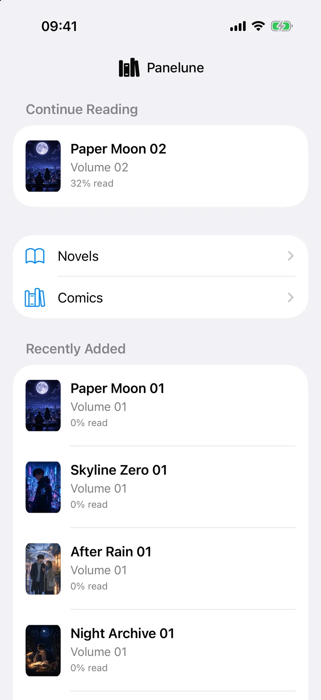
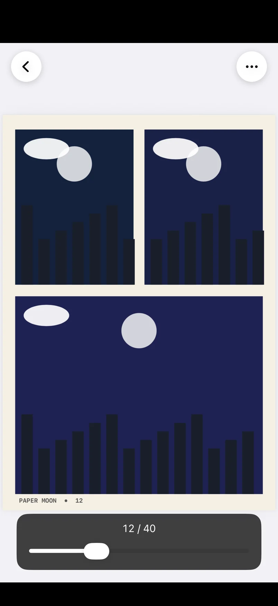
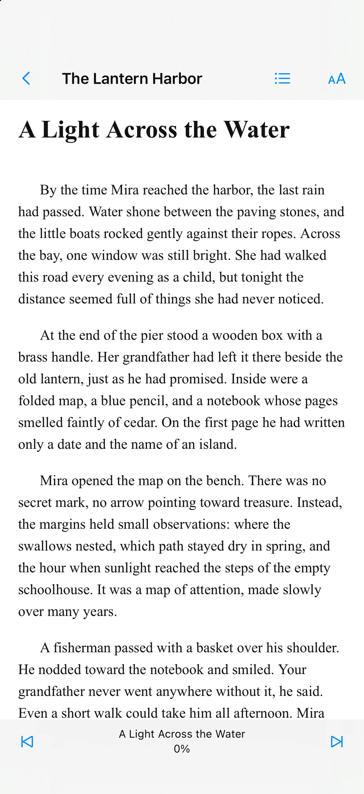
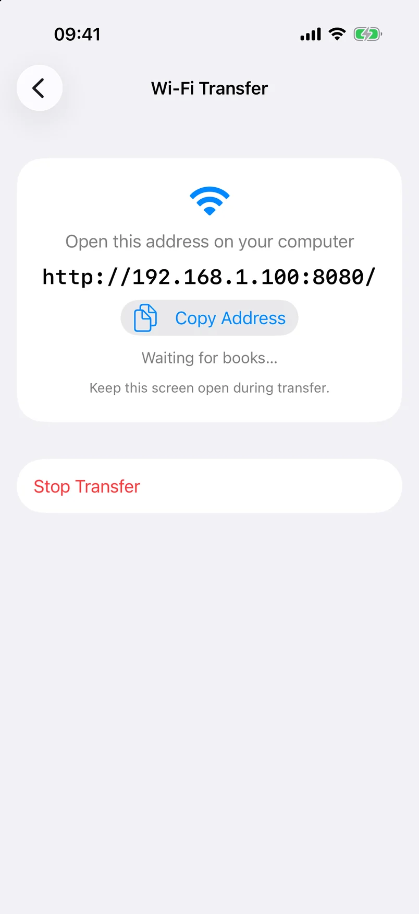

Your Personal Library
Keep manga, comics, and novels together, organized into Series and Volumes.
A private, local-first reader for manga, comics, and EPUB novels. Organize your collection, enjoy comfortable reading, and keep your books on your device.
Panelune 1.1.1 is available for iPad. Version 1.2.0, with iPhone support and reading improvements, has been submitted for Apple review and is not yet available.
Real Panelune screens with original demo books. iPad screenshot shown in English.





Keep manga, comics, and novels together, organized into Series and Volumes.
Settle into novels with adjustable fonts, a table of contents, and reading progress restoration.
Choose interactive page turns or continuous vertical scrolling for your comics.
Keep selected books in a separate library protected by device authentication.
Link a folder through Files or transfer books from your computer over local Wi-Fi.
Read imported books offline. No account required. No developer-hosted cloud library.
Coming in 1.2.0: improved EPUB rendering, typography and font settings, smoother interactive comic page turns, and more reliable reading progress restoration on iPhone and iPad.
Bring your own books, then make the library easier to use.
Start with books you already own. Choose Wi-Fi Transfer for a copy in Panelune, or link a folder through Files to read files in their existing location.
A Series groups related books; each Volume is one book inside it. Use these controls to tidy an imported collection and find your next read.
The app supports English, Simplified Chinese, Traditional Chinese, Japanese, and Korean.
English · 简体中文 · 繁體中文 · 日本語 · 한국어
Free: create up to 3 Series and keep adding Volumes to existing Series. Panelune Pro removes the Series limit.
One-time purchase. No subscription.
See your local price in the app.